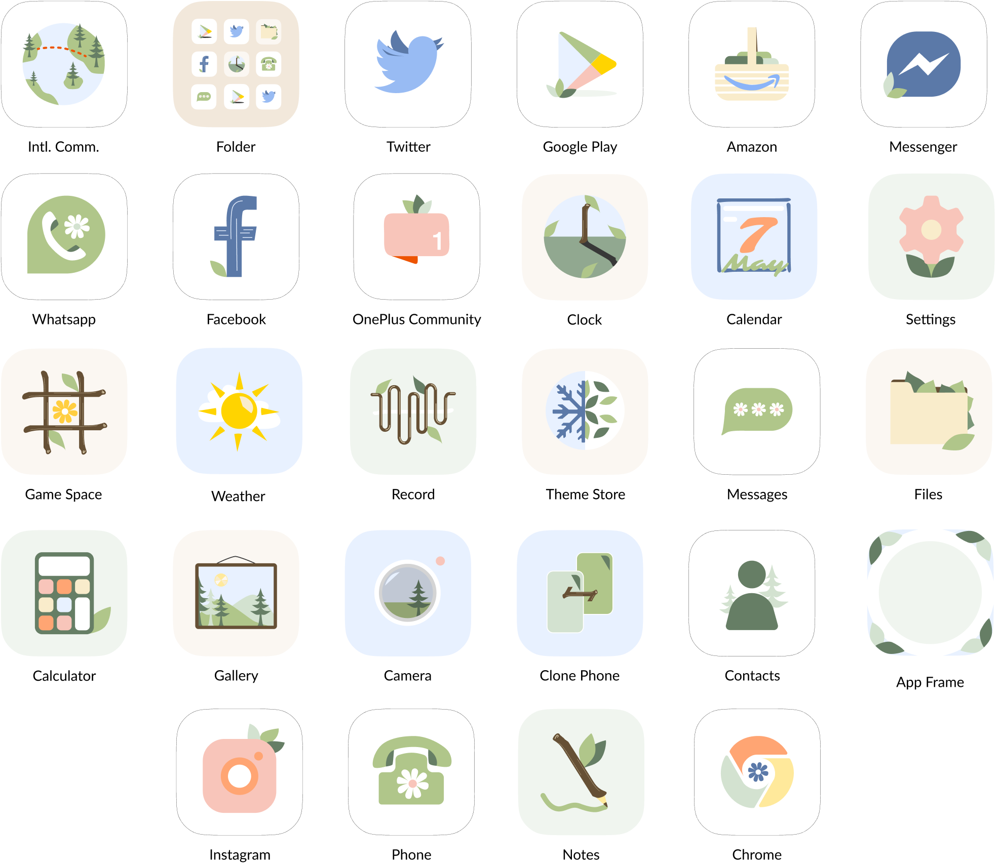

OnePlus Themed Interface Design
Role: UI Designer
Tools + Methods: Figma
Deliverables: Lo and Hi-Fi Prototypes, App Kit
Collaborators: Mio Liu
The phone company OnePlus, with a theme store in the works, decided to collaborate with me to further develop a concept I presented to them of a themed charging animation, home screen, and app kit. While not yet released, this is a quick overview of the original concept and the development of the app kit, which grew from 8 designs to 28.

The original concept I presented revolved around organic shapes and colors, and on having a calming effect on users by bringing in elements of nature to take away from the immediacy and stress that often comes with using a phone. From social media to work purposes, preliminary research showed that when users operated their phone to accomplish one task, they often ended up getting distracted and doing something else, which was unideal.
In the development of the app kit, I got feedback to bring in more color and natural imagery within the icons themselves. The concept pivoted and became slightly more animated. Below, the designs show the difference in tone from the original concept, but also how it keeps with the nature theme and imagery in a way that still imbues the feeling of serenity with nothing fighting for your attention.
